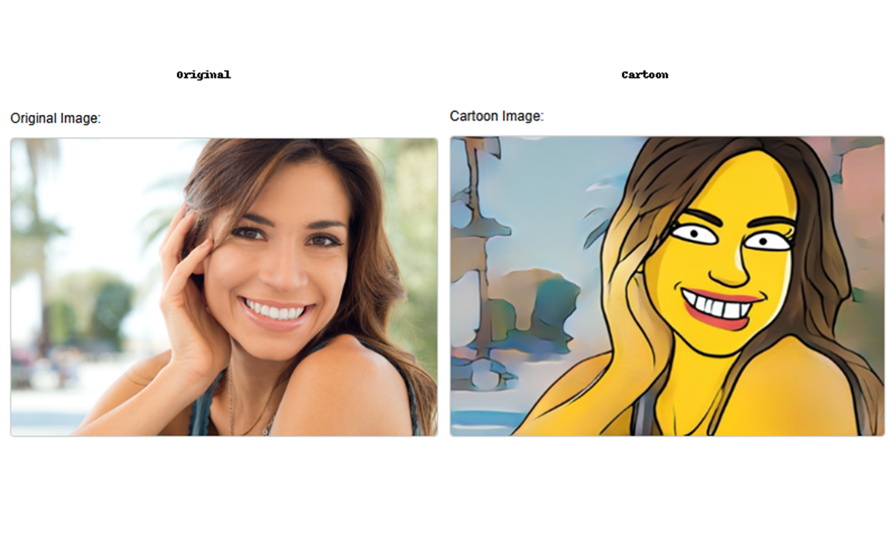
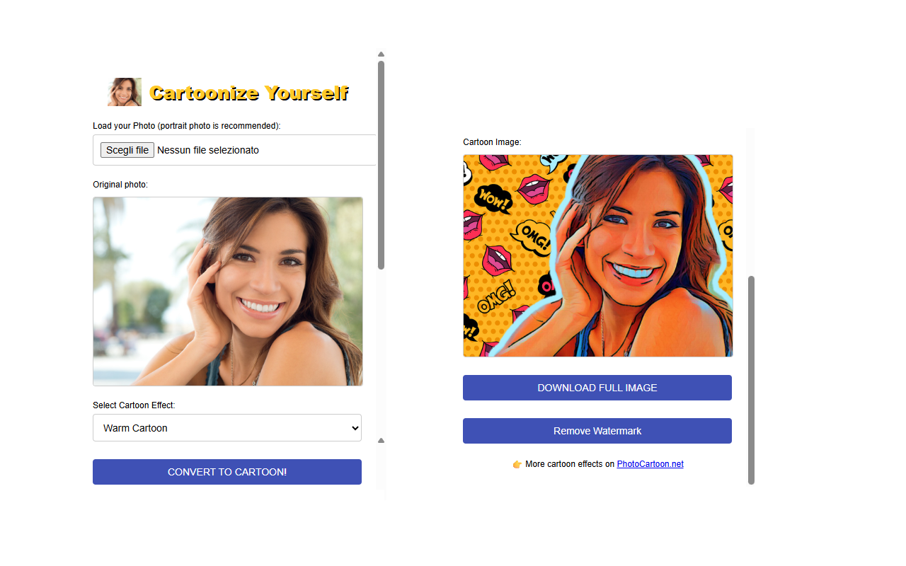

Photo to Cartoon | Photo to Simpson
With Photo to Cartoon and Photo to Simpson Converter, you can turn your portrait photos into fun and cartoonish artwork with a single click! Choose from a variety of cartoon filters including iconic yellow styles, sketch, poster effects, and more. 🖼️🎨
✨ Features
- 📸 Upload your own image directly from your computer
- 🎭 Apply multiple cartoon styles and effects instantly
- 🎨 Choose from Simpson styles, sketch, and posterize filters
- 🔄 View original and converted images side by side
- 💾 Download the final image with or without watermark
- 🔓 Unlock PRO mode with a license for watermark-free export
🧑🎨 Try these extensions
Explore both available extensions on the Chrome Web Store:
🎯 Perfect for
Whether you're creating a fun profile pic, designing stickers, or just having fun, our cartoon converters are easy to use and deliver fast results for everyone.
📸 Before and After Example

📸 Before and After Example

🛒 Try Photo Cartoonizer🛒 Try Photo to Simpson